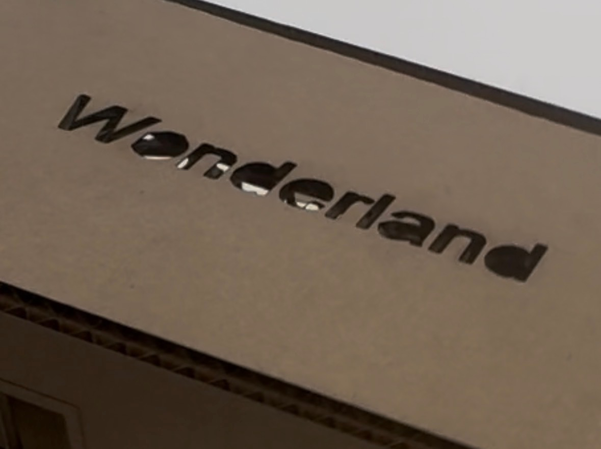
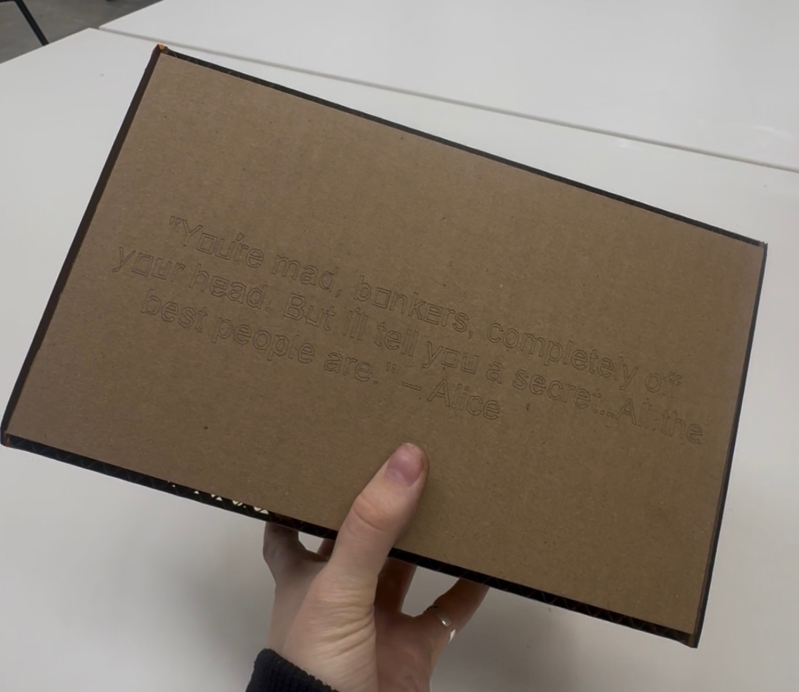
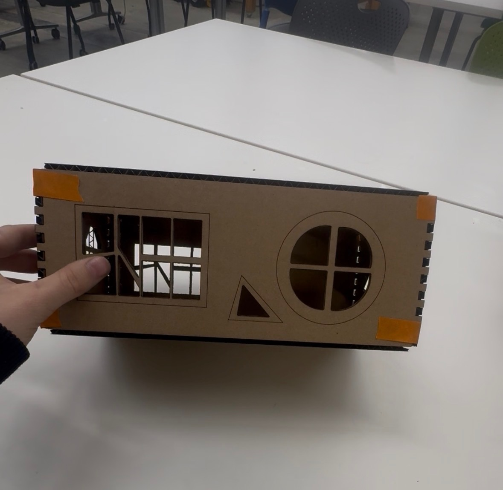
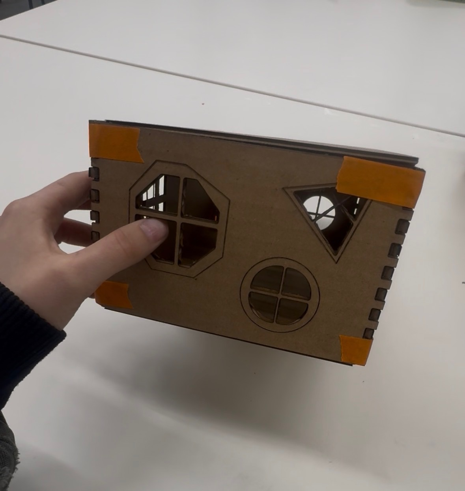
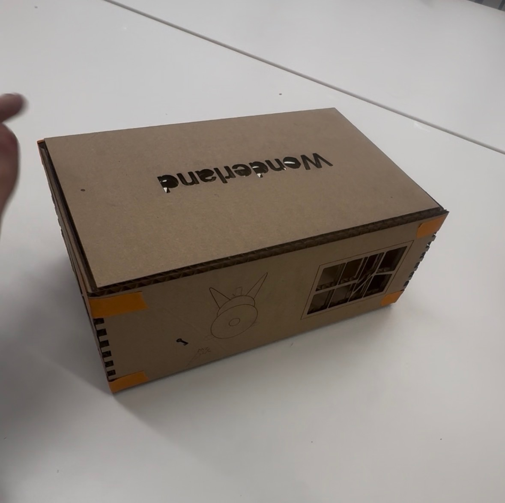
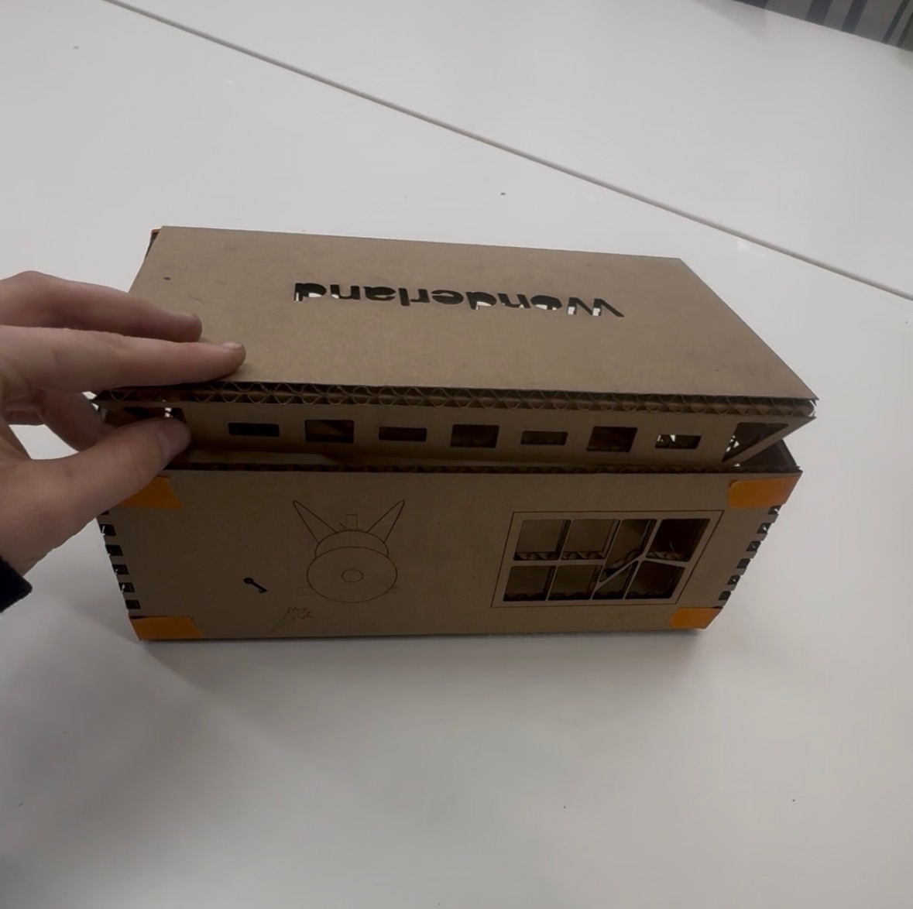

<div class="textcontainer">
<p class="margin"> </p>
<h3>Week 2: 2D Design & Cutting</h3>
<iframe width="420" height="315"
src="https://youtube.com/embed/SIwXCZ8hjS4">
</iframe>
<p class="margin"> </p>
<div class="flexrow">
<a id="btn" href="./2x8 block.f3d" download>Click Here to Download my CAD files!
</a>
</div>
<p class="margin"> </p>
<h4>Making a Box...</h4>
Theme: Alice in Wonderland
<img src="./IMG_6339.jpg" width = "200">
<br></br>
Here was my earliest succesful box prototype!
<br></br>
<img src="./beep.jpg" width = "400">
(In fusion)
<br></br>
1. Funky asymmetrical windows
<br></br>
2. A quote on the bottom that I hand drew in fusion (both because I couldn't get text to transfer to the Rhino software [Bobby fixed it]
<br></br>
{Bless you Bobby}
<br></br>
and because I DID want it to be a bit esoteric)
<br></br>
3. The word "Wonderland" carved in the lid.
<br></br>
(This earlier prototype didn't have a closeable lid, rather one that just sits on top)
<br></br>
<img src="./helll.jpg" width = "200">
<img src="./oml.jpg" width = "200">
<img src="./absolutelynot.jpg" width = "200">
<img src="./ohjesus.jpg" width = "200">
<br></br>This was a bit too small, but I liked the idea and wanted to add more details as well.
<br></br>
BUT...
<br></br>
I was super happy with how clean and even the corners turned out:
<br></br>
<img src="./right.jpg" width = "200">
crrispyyy
<br></br>
Next I changed the dimensions a bit! I added details and figured out the measurement that would allow the lid to close by a flap that tucks inside.
<br></br>
<img src="./woo.jpg" width = "500">
<br></br>
It took me so long to map out what lines had to be cut vs. scored vs. engraved in the laser cutter software. I settled on this:
<br></br>
<img src="./yuppp.jpg" width = "500">
<br></br>
Here is my completed box! I'm very happy with her!
<br></br>




<br></br>
(Tape is temporary while I wait for hot glue)
<br></br>
Here is the lid closing mechanism:
<br></br>


<br></br>
<br></br>
<h4>Assignment 2: Fusion 360 Tutorial</h4>
Didn't finish have to sleep for math test! I'll be submitting a regrade request <3
<br></br>
<img src="./sum.jpg" width = "300">
<img src="./sumelse.jpg" width = "300">
<br></br>
Here is a tutorial I did on making a lego brick! It helped me understand the dynamics of fusion SO much better, I was so pleased. Now I also understand why a caliper is so valuable for modeling things in their real size. I'm also thinking/hoping that this software will be what we use for 3D printing and I'm very excited!
<br></br>
<h4>Assignment 3: Fusion Modeling</h4>
</div>